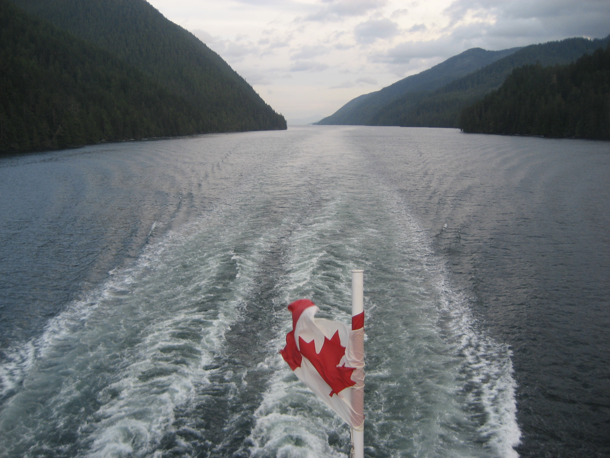
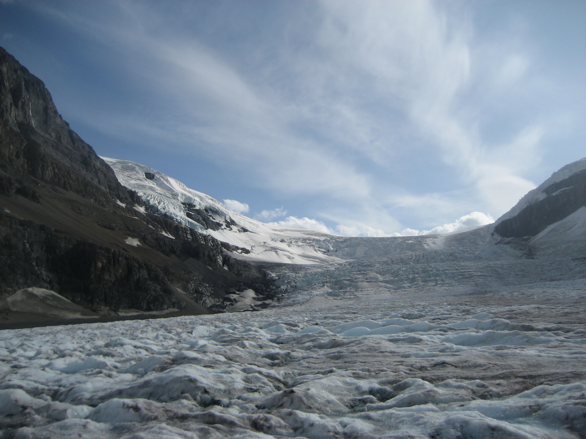

1 / 3

Canadese wateren bij westkust.
2 / 3

Gletsjer in canada.
3 / 3

Eekhoorntje in een boom.
Canada is een prachtig land, het verschilt ook zeer waar je heen gaat in dit land. Ik heb een kleine rondreis gedaan in de west-kant. Zo ben ik langs Lake Louise geweest en ik heb veel wilde dieren gezien zoals bruine beren.